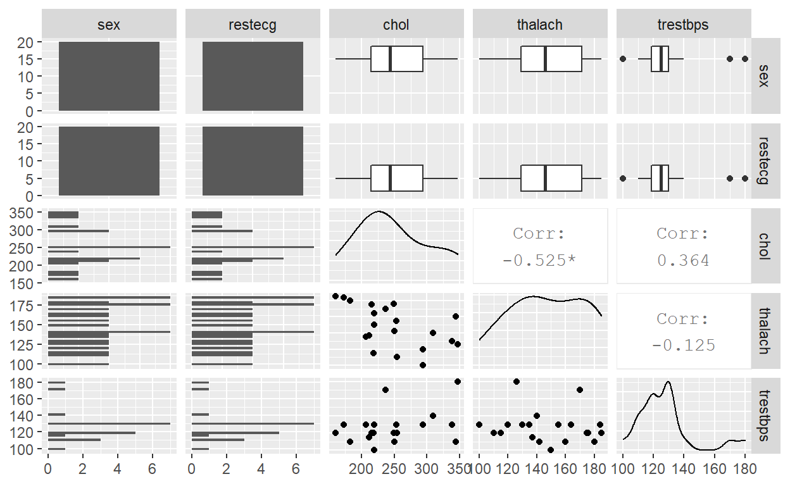

Alright so let us get right into the 3D scatterplot. We can see that it looks like a cloud of nothing in terms of group differences so this is where we would take advantage of the ability to filter the groups by clicking on the respective symbol in the legend. All of the groups seem to fill out the same/similar space as any other group. I would be surprised if there were differences along the means. Even cases where I would have considered to be outliers seem to have a few cases near it, indicating that these may be rare events rather than outliers. It should be noted that these rare events seem to be prone for a specific group as well. Perhaps it should be treated as both?
